THE TOP MONTHLY#TRUMPRUSSIASTORY|MARCH 2019
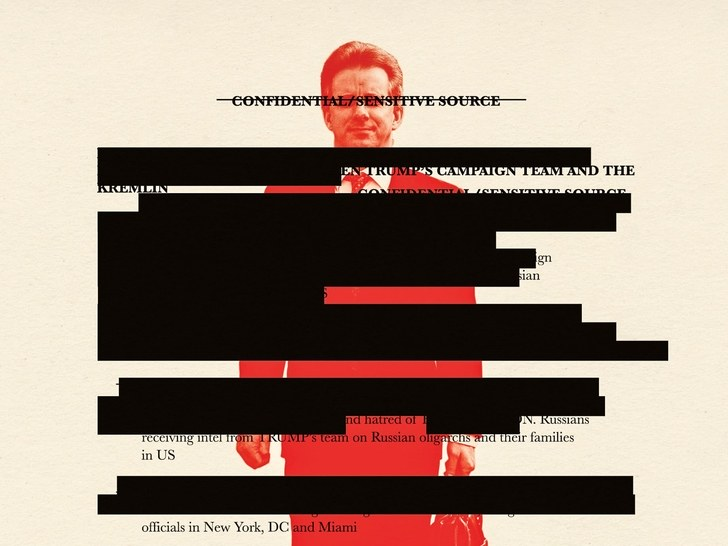
Expert in Trump dossier trial says tech firm’s services were used in hack of Democrats
Documents unsealed in a South Florida court case provide the most convincing evidence yet that Russian spies piggybacked on a Russian-tied foreign tech company with offices in Florida and Texas to hack the Democratic National Committee and party leaders.
The documents were unsealed Thursday in the aftermath of a failed defamation lawsuit brought against online news company BuzzFeed by XBT Holding and its founder, Aleksej Gubarev. BuzzFeed had identified him and his company when it published in January 2017 the so-called Trump dossier, compiled by former British spy Christopher Steele.
Continue Reading
THE TOP MONTHLY#TRUMPRUSSIASTORY|FEBRUARY 2019
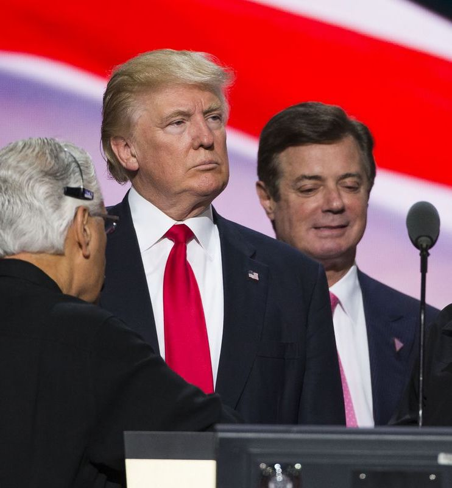
Manafort Found to Have Lied to Prosecutors While Under a Cooperation Agreement
After Mr. Manafort agreed in September to cooperate with the office of the special counsel, Robert S. Mueller III, the judge found, he lied about his contacts with a Russian associate during the campaign and after the election. Prosecutors claim that the associate, Konstantin V. Kilimnik, has ties to Russian intelligence, and have been investigating whether he was involved in Russia’s covert campaign to influence the election results.
The judge also found that Mr. Manafort had lied about a payment that was routed through a pro-Trump political action committee to cover his legal bills, and about information relevant to another undisclosed investigation underway at the Justice Department.
Continue Reading
THE TOP MONTHLY#TRUMPRUSSIASTORY|JANUARY 2019
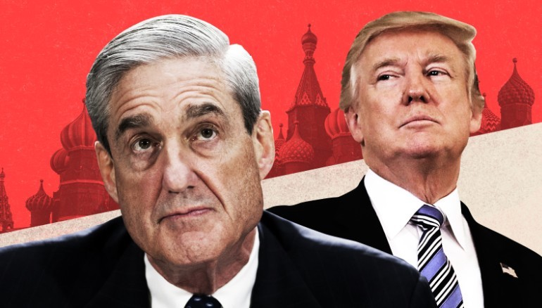
F.B.I. Opened Inquiry Into Whether Trump Was Secretly Working on Behalf of Russia
In the days after President Trump fired James B. Comey as F.B.I. director, law enforcement officials became so concerned by the president’s behavior that they began investigating whether he had been working on behalf of Russia against American interests, according to former law enforcement officials and others familiar with the investigation.
The inquiry carried explosive implications. Counterintelligence investigators had to consider whether the president’s own actions constituted a possible threat to national security. Agents also sought to determine whether Mr. Trump was knowingly working for Russia or had unwittingly fallen under Moscow’s influence.
Continue Reading
THE TOP MONTHLY#TRUMPRUSSIASTORY|DECEMBER 2018
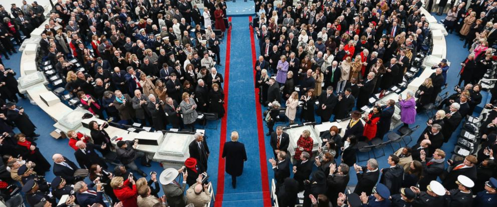
Trump Inauguration Spending Under Criminal Investigation by Federal Prosecutors
Federal prosecutors in Manhattan are investigating whether President Trump’s 2017 inaugural committee misspent some of the record $107 million it raised from donations, people familiar with the matter said.
The criminal probe by the Manhattan U.S. attorney’s office, which is in its early stages, also is examining whether some of the committee’s top donors gave money in exchange for access to the incoming Trump administration, policy concessions or to influence official administration positions, some of the people said.
Continue Reading
THE TOP MONTHLY#TRUMPRUSSIASTORY|NOVEMBER 2018
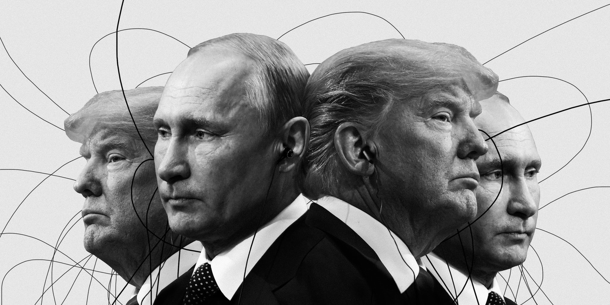
Trump Tower Moscow, and Michael Cohen’s lies about it, explained
A court document filed by Mueller states that Cohen — Trump’s former personal lawyer and fixer — lied to Congress at least three separate times about plans to build a Trump Tower in Moscow with Trump’s name prominently featured on top.
Cohen testified to Congress that negotiations to build Europe’s tallest building stopped in January 2016. But emails and other communications obtained by multiple news outlets, and now basically confirmed by Cohen, show those negotiations actually continued much longer: into at least June 2016, after Trump had already become the Republican Party’s nominee. And BuzzFeed News reported on Thursday that Trump’s company planned to give the $50 million penthouse in the building to Russian President Vladimir Putin.
Continue Reading
THE TOP MONTHLY#TRUMPRUSSIASTORY|OCTOBER 2018
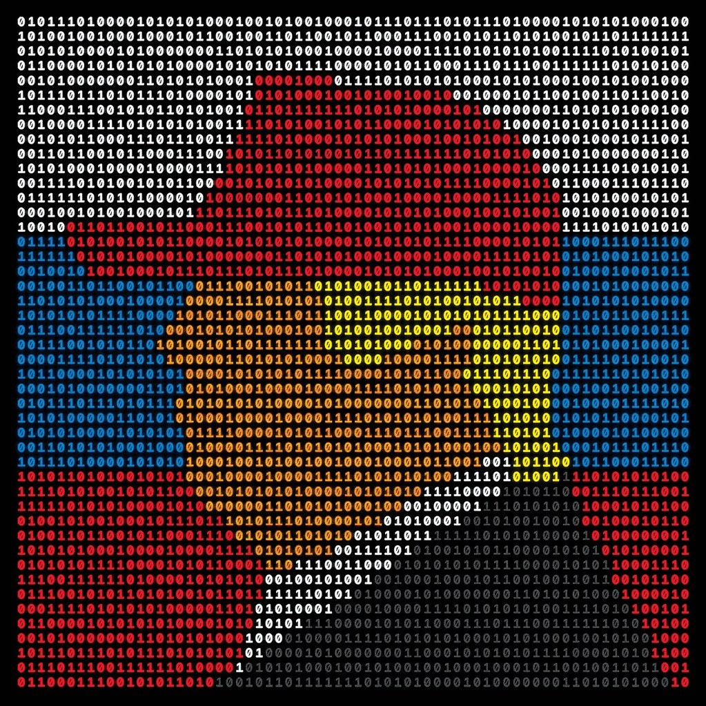
How Russia Helped Swing the Election for Trump
Few people, including Trump’s opponents, have publicly challenged the widespread belief that no obtainable evidence can prove that Russian interference changed any votes. Democrats, for the most part, have avoided attributing Hillary Clinton’s defeat directly to Russian machinations. They have more readily blamed James Comey, the former F.B.I. director, for reversing Clinton’s thin lead in the final days of the campaign by reopening a criminal investigation into her mishandling of classified e-mails.
Many have also expressed frustration with Clinton’s weak performance as a candidate, and with her campaign’s tactical errors. Instead of investigating whether Russia tipped the electoral scales on its own, they’ve focussed on the possibility that Trump colluded with Russia, and that this, along with other crimes, might be exposed by the probe being conducted by the special counsel, Robert Mueller.
Continue Reading
THE TOP MONTHLY#TRUMPRUSSIASTORY|SEPTEMBER 2018
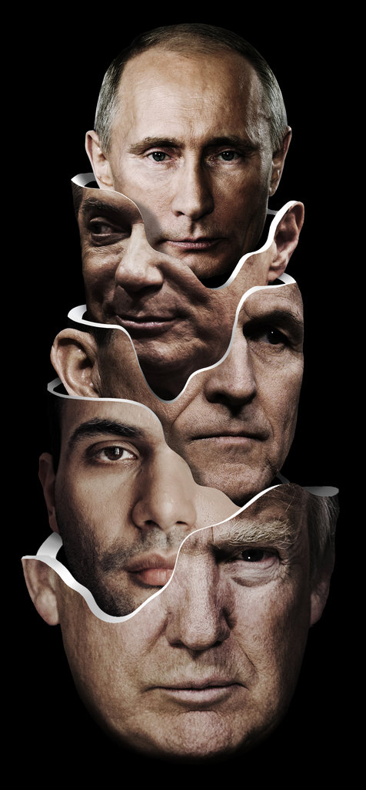
The Plot to Subvert an Election
For many Americans, the Trump-Russia story as it has been voluminously reported over the past two years is a confusing tangle of unfamiliar names and cyberjargon, further obscured by the shout-fest of partisan politics. What Robert S. Mueller III, the special counsel in charge of the investigation, may know or may yet discover is still uncertain. President Trump’s Twitter outbursts that it is all a “hoax” and a “witch hunt,” in the face of a mountain of evidence to the contrary, have taken a toll on public comprehension.
But to travel back to 2016 and trace the major plotlines of the Russian attack is to underscore what we now know with certainty: The Russians carried out a landmark intervention that will be examined for decades to come.
Continue Reading
THE TOP MONTHLY#TRUMPRUSSIASTORY|AUGUST 2018
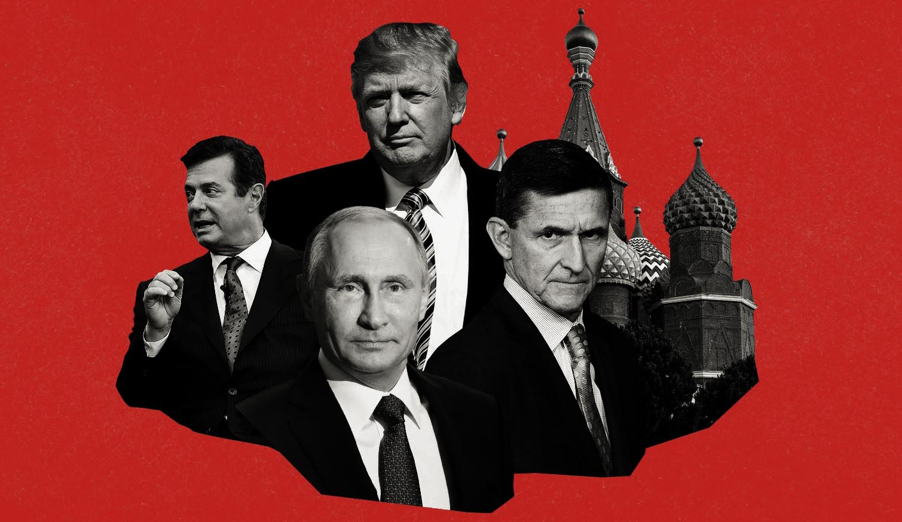
Paul Manafort, Trump's Former Campaign Chairman, Guilty of 8 Counts
ALEXANDRIA, Va. — Paul Manafort, President Trump’s former campaign chairman, was convicted on Tuesday in his financial fraud trial, bringing a dramatic end to a politically charged case that riveted the capital.
The verdict was a victory for the special counsel, Robert S. Mueller III, whose prosecutors introduced extensive evidence that Mr. Manafort hid millions of dollars in foreign accounts to evade taxes and lied to banks repeatedly to obtain millions of dollars in loans.
Mr. Manafort was convicted of five counts of tax fraud, two counts of bank fraud and one count of failure to disclose a foreign bank account. The jury was unable to reach a verdict on the remaining 10 counts, and the judge declared a mistrial on those charges.
Continue Reading
THE TOP MONTHLY#TRUMPRUSSIASTORY|JULY 2018
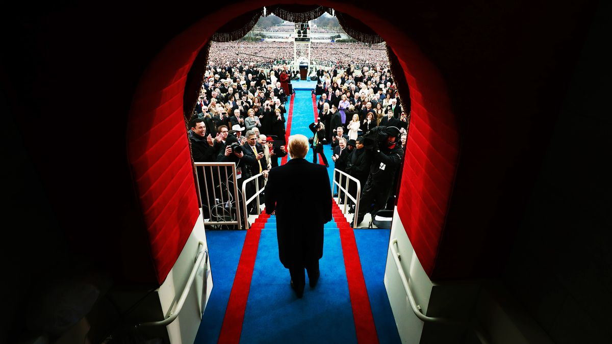
Why Trump’s inauguration money is a major part of Mueller’s Russia investigation
What happened at Donald Trump’s inauguration 18 months ago, and why does special counsel Robert Mueller appear to be so interested in it?
Last week, ABC News’s Matthew Mosk and John Santucci reported that several wealthy Russians were “granted unusual access” to Trump inauguration parties back in January 2017 — and that Mueller was seeking to find out why.
This isn’t the first time we’ve heard of Mueller’s interest in the inauguration. Back in April, CNN reported that the special counsel was investigating “whether wealthy Russians illegally funneled cash donations directly or indirectly into Donald Trump’s presidential campaign and inauguration” — and had even questioned some oligarchs directly.
Continue Reading
THE TOP MONTHLY#TRUMPRUSSIASTORY|JUNE 2018
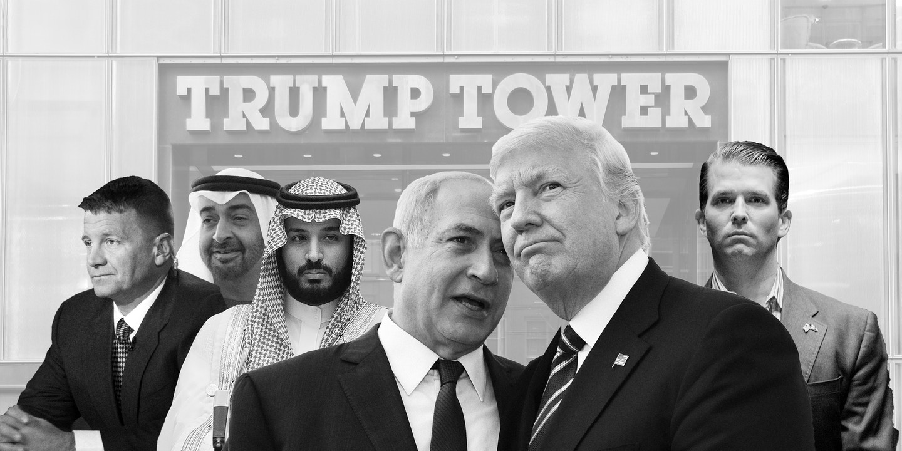
MORE THAN JUST RUSSIA — THERE’S A STRONG CASE FOR THE TRUMP TEAM COLLUDING WITH SAUDI ARABIA, ISRAEL, AND THE UAE
Donald Trump has fully embraced both official, legalized corruption as well as good, old garden-variety individual corruption. Did Trump directly conspire with Vladimir Putin and Russia to influence the 2016 election? That is certainly possible. Will we see concrete evidence of that, especially evidence that would stand up in a court? That also is possible.
It is also plausible that Robert Mueller issues a public report that would be damaging, if not damning, to Trump, but for whatever reason decides not to or, because of Trump’s influence over the Justice Department, cannot pursue criminal action. We shall see. But this much is clear: It is a major mistake to place all focus on Russia. We know that Trump’s team has colluded with Israel. We know they colluded with Saudi Arabia. We know they colluded with the United Arab Emirates.
Continue Reading
THE TOP MONTHLY#TRUMPRUSSIASTORY|MAY 2018
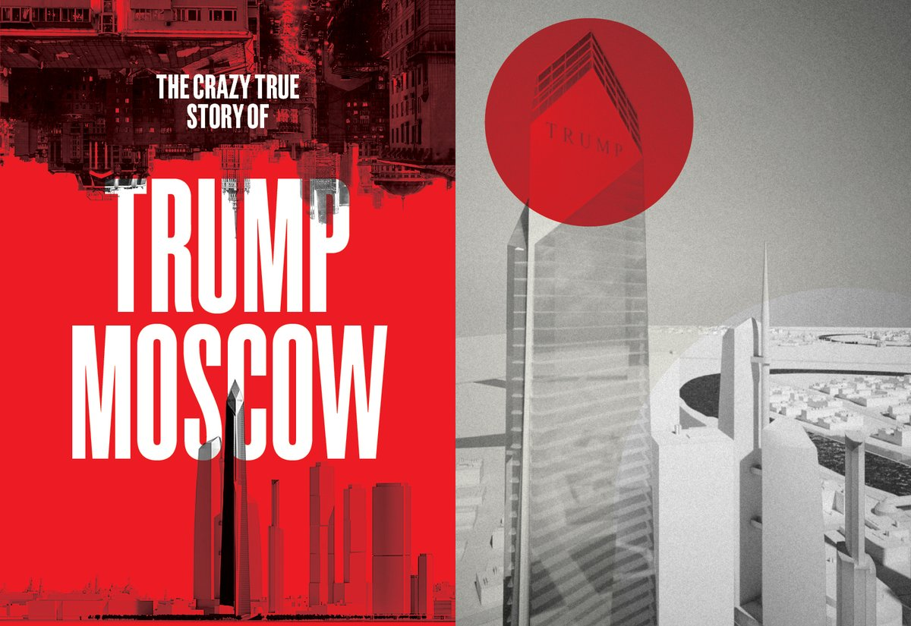
The Definitive Story Of How Trump’s Team Worked The Trump Moscow Deal During The Campaign
All through the hot summer campaign of 2016, as Donald Trump and his aides dismissed talk of unseemly ties to Moscow, two of his key business partners were working furiously on a secret track: negotiations to build what would have been the tallest building in Europe and an icon of the Trump empire — the Trump World Tower Moscow.
Talks to construct the 100-story building continued even as the presidential candidate alternately bragged about his relationship with Vladimir Putin and rejected suggestions of Russian influence, and as Russian agents worked to sway US public opinion on Trump’s behalf.
Continue Reading
THE TOP MONTHLY#TRUMPRUSSIASTORY|APRIL 2018
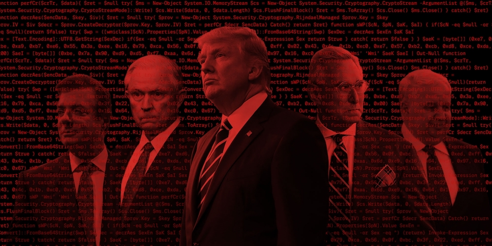
THE ABSENT PROFESSOR
THEY MET IN Moscow. Joseph Mifsud saw her for the first time at the Bolshoi Theater. He struck up a conversation, offered to take her picture, and asked her out to dinner. Mifsud, an obscure, middle-aged academic originally from Malta, soon began dating the young Ukrainian woman. He liked to impress her by talking about his ties to important Russian officials. He told her he was friends with Sergey Lavrov, Russia’s foreign minister. Soon he was traveling to Ukraine to visit her. He met her family and eventually asked her to marry him. They got engaged; she got pregnant. And then, last fall, he vanished.
Anna, Joseph Mifsud’s fiancée, whose story — without her last name — was recently told in a well-crafted BuzzFeed News piece, stands at the center of one of the biggest mysteries in Special Counsel Robert Mueller’s investigation into possible collusion between Russia and Donald Trump: Where is Joseph Mifsud?
Continue Reading
THE TOP MONTHLY#TRUMPRUSSIASTORY|MARCH 2018
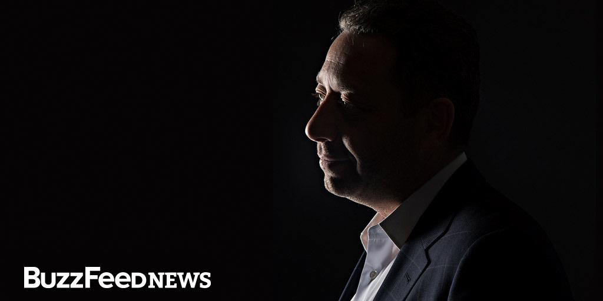
How A Player In The Trump-Russia Scandal Led A Double Life As An American Spy
Felix Sater has been cast as a Russian mafioso, a career criminal, and a key business associate of President Donald Trump — but he spent more than two decades as an intelligence asset who helped the US government track terrorists and mobsters. “Greed is my go-to weapon.” In the sprawling Trump-Russia investigation, one name constantly pops up: Felix Sater. In story after story, Sater is described as Donald Trump’s former business partner, a convicted stock swindler who was born in the Soviet Union, worked in Russia, tried to win Trump a deal in Moscow, and even helped broker a Ukrainian peace plan that Vladimir Putin would have loved.
Basically, he’s portrayed as something just short of a Russian spy.
Continue Reading
THE TOP MONTHLY#TRUMPRUSSIASTORY|FEBRUARY 2018
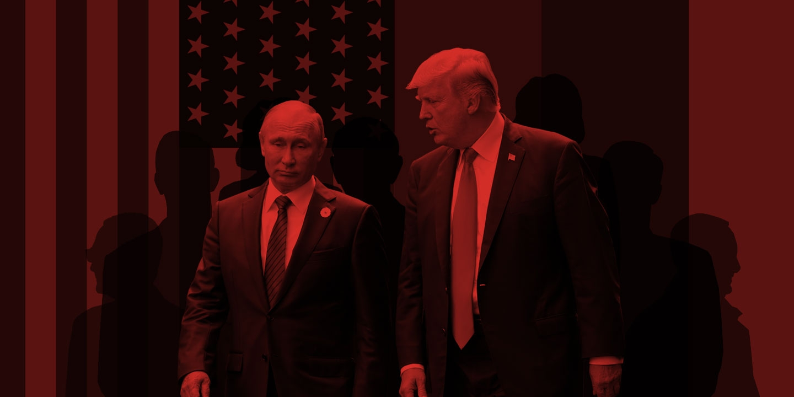
Is Donald Trump a Traitor?
One year after Trump took office, it is still unclear whether the president of the United States is an agent of a foreign power. Just step back and think about that for a moment.The fact that such an unstable egomaniac occupies the White House is the greatest threat to U.S. national security in modern history. His 2016 campaign is the subject of an ongoing federal inquiry that could determine whether Trump or people around him worked with Moscow to take control of the U.S. government. Americans must now live with the uncertainty of not knowing whether the president has the best interests of the United States or those of the Russian Federation at heart. Most pundits in Washington now recoil at any suggestion that the Trump-Russia story is really about treason. They all want to say it’s about something else – what, they aren’t quite sure.
Continue Reading